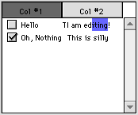

In mid-december, on the DR2 mailing list, Andrew Barry, the programmer
behing RB, announced that REAL Software had gotten a tech-writer who they had worked
with in the past to begin on an updated reference for DR2. This should arrive sometime
in January (probably soon after you read this), and will be a VERY welcome improvement
to the release notes that we have to work with now (and the cover story of course...)
If you can't wait until then, you can still get a good idea of the new features in
DR2 releases–after all, the release notes are now provided with the stuffit archive.
For many people, shock was the first reaction, as the infamous "Your
demo has expired" dialogs popped up whn opening a version DR2.
Don't panic though! Your 1.0 codes should still work just fine.
| Welcome... to MacWorld Expo '99! |
REAL Software will be at a booth (#1647) at the MacWorld Expo from January
5 to January 8. So, if you happen to be in Boston, go say hi to them! I'll hopefully
have pictures from the expo in the next issue. And even if you don't care about RB,
go anyway! =)
REAL Software has put up a special
page for REALbasic 1.1 beta. This features Navigation Services support, an Import
command, tons of balloon help, and support for extended ASCII characters in method
names. It was supposed to be released on the December 23, but that has obviously
been put off. It should come out any day now however.
| RB stands to lose plugin developers |
Bjorn Einhugur, a popular plugin developer who has been making plugins
since their creation, has said that he will probably stop making RB plugins, and
move to ActiveX. Why would a good person like Bjorn leave RB to go to that other
company? Tech Support. According to him, Microsoft's tech support is excellent,
but none of his inquiries to REAL SW have been answered in the past six months.
Not providing good tech support is a very bad move, and as Bjorn's
case has shown us, it can be costly to the RB world as well.
As you may have realized, the size of the RB app has been skyrocketing
recently. DR2r29 weighed in at a hefty 4.3 megabytes. For some comparison, CrossBasic
DR1r27 was only 2.3 megabytes! This problem is escalated by the fact that the only
place to get a DR2 release is ftp.realsoftware.com–one of the slowest servers on
the internet. One solution is obviously to trim down RB. Another is to speed up the
FTP server. However, the most likely alternative is for patches from one version
to the next to be uploaded. I made a DR2r28->DR2r29 patch with ResCompare on my
computer. Here are some stats–if nothing else, they show that patches are a viable
option:
| Size of REALbasic DR2r28: |
4,446,745 bytes. (4.3 MB) |
| Size of REALbasic DR2r29: |
4,473,223 bytes. (4.3 MB) |
| Size increase: |
26,478 bytes (25K) |
| Size increase (percent): |
0.5% |
| Size of DR2r28->r29 Patch: |
966,086 bytes (955K) |
| Time to make patch: |
2 hours, 15 minutes* |
| Time on G3/300** |
90 seconds |
| Size of patch (stuffed): |
700,863 bytes (690K) |
* Time with ResCompare on a 603ev/240 in the background
for 90% of the time with 8MB of RAM allocated to it. Actual mileage may vary. **
According to a source. Hasn't been confirmed.
| REALFileManager offers REAL abilities |
A new plugin called "REALFileManager" has popped up on the
RB café (in the plugins folder). It adds to RB's current file system in several
ways. Most prominently though, it allows you to get/set comments for files, and read
and write the Resource Fork as plain data. The first ability is useful, but the latter
ability is a downright godsend for anyone interested in writing internet file
transfer programs (like Hotline Clients).
Just as my luck would have it, Andrew totally redesigned the QuickTime
features in DR2r28. This means that my cover story for last month is completely useless,
unless you happen to be using a version after r18, and prior to r28.
For those of you interested, Geoff has posted a sample of how to use
these new features at ftp.realsoftware.com/dr2/
| Variant data type changes before your eyes! |
In DR2r30, a new data type: variant was added. This data type,
which is present in languages such as Visual Basic, allows you to put any type of
data in a single type of variable. For example, if you dim a variable called v as
a variant, both the statements v="Hello" and v=3.14158
would be valid. Check out the cover story for more
info on this.
| ListBox continues improvement |
 As
you may know, the new DR2 releases feature a totally rewritten listbox. Now, beginning
with DR2r29, that list box is starting to truly come into its own. New features include
the ability to put checkboxes in any single cell/column, as well as making the text
of a cell/column editable while the program is running (check out the picture to
the right). It still has a small bug with the editable cells though—the edited text
isn't at the same spot as the normal text. You can see this from the picture. Be
sure to read about these great new features in the cover
story.
| QuickDrawLib 2.0 in progress |
A beta version of QuickDrawLib 2.0 (code-name QDLib OB) is now avaiable
from Bjorn Einhugur's site (it's for registered users of any of his other libs).
Version 2.0 promises to take advantage of DR2's improved plugin capabilities by introducing
more classes, like coordinates and rectangles, which will be used in conjuction with
its methods to make them simpler.
| More RB internet hangouts |
There are two new places to discuss REALbasic on the internet: a newsgroup
(comp.lang.basic.realbasic), and an IRC channel (irc-2.mit.edu#REALbasic). The IRC
channel is run by Alex Duncan (from the popular "Unnoficial RB Newbies site"),
so it's only up when he's online. Nevertheless, Hotline is no longer the only place
to discuss RB. For a recap, there's the RB Cafe, the three mailing lists, a messageboard
somewhere on the www, a newsgroup, and an IRC channel. Cool!
A new plugin, DxMidi, is in development. It allows your program to accept
MIDI input from any standard MIDI device. When it is released, it will feature full
OMS Midi support, as well as a variety of other perks. If you just can't wait for
this cool new plug, a beta version is available for free at the RB café. Version
1.0 will be $15 shareware.
| SpiffyVector...um..spiffs the crowd |
SpiffyVector, a nifty program available at the RB café, allows you
to edit vector based objects through a simple class in RB. This may sound familiar.
After all, I ran a news article on MiniVector a few months ago. SpiffyVector has
several advantages though. It's much cleaner, and features more shapes, such as polygons,
so be sure to check out Jim Rodovich's great class!
Here are all of the updates to RB since last issue.
Black version numbers indicate a normal release.
| Version |
Date |
Summary |
| DR2r28 |
12/8 |
MouseX, MouseY properties
More balloon help for IDE |
| DR2r29 |
12/11 |
Editable and Checkbox cells in Listboxes
Redesigned QuickTime features |
| DR2r30 |
12/17 |
Variant data type added
Databases can now be updated |
| DR2r31 |
12/23 |
Windows can contain arbitrary objects
Bug fixes |
| DR2r32 |
12/23 |
Improvements to the Windows compiler
Released 22 hours after r31 |
| DR2r33 |
12/28 |
Bug fixes for Live Scrolling and databases |
| DR2r34 |
12/30 |
User interface for modifying database schema added (huh?) |
| DR2r35 |
1/1/99 |
Databases can be bound to listboxes
Database bug fixes |